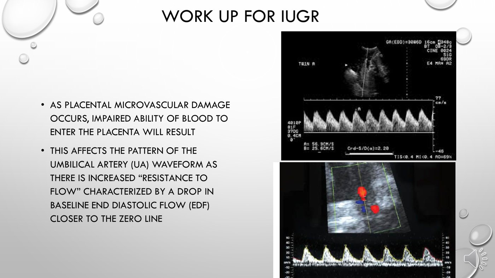
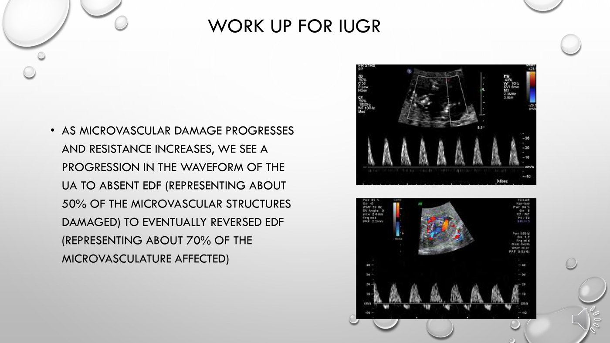

Approach to the Small Fetus
- Normal estimated fetal weight is the 10th–90th percentile. Below the 10th is SGA; above the 90th is LGA. Real concern starts below the 3rd.
- SGA is not IUGR. SGA is a percentile, and most SGA babies are simply constitutionally small. IUGR is a pathological failure to reach growth potential, and it can happen above the 10th percentile.
- Screen with the symphysis–fundal height (cm ≈ weeks after 20 weeks; > 2–3 cm behind is a flag). Confirm only by ultrasound.
- Causes are maternal, fetal or placental. Placental insufficiency is where most of them end up.
- Umbilical artery Doppler: resistance rises → absent end-diastolic flow (≈ 50% of placental microvasculature lost) → reversed (≈ 70%). No catch-up growth happens in utero, and delivery is the only cure. Deliver at ≥ 37 weeks; at 32–37 if there's oligohydramnios or abnormal Dopplers; before 32 only for fetal distress.
Learning Objectives
- Explain care through pregnancy for a fetus with poor growth.
- Identify mechanisms of determining when a fetus may be small.
- Define SGA vs IUGR.
- List causes of IUGR.
- Describe the investigation of IUGR.
Dr. Jordan Schmidt, obstetrics, 20 minutes, one recording titled “Fetal Growth Restriction”. The deck and module use IUGR (intrauterine growth restriction); FGR (fetal growth restriction) means the same thing. The four ultrasound measurements are shown in 5.15.
How a Fetus Is Weighed
Nomograms give the expected fetal weight at each gestational age. The estimated fetal weight (EFW) comes from a formula built on four ultrasound measurements. The most common is Hadlock, which uses:
| Measurement | Abbreviation |
|---|---|
| Head circumference | HC |
| Abdominal circumference | AC |
| Biparietal diameter | BPD |
| Femur length | FL |
| EFW percentile | Label | Meaning |
|---|---|---|
| > 90th | LGA — large for gestational age | — |
| 10th–90th | Normal | — |
| < 10th | SGA — small for gestational age | Smaller than expected; usually still healthy |
| < 3rd | — | Where the risk of adverse outcomes becomes clinically significant. Some sources reserve “true” growth restriction for this. |
The weight at each percentile changes a great deal across pregnancy, so a percentile always has to be read against the gestational age. (The recording calls the 10th percentile “two standard deviations below” the mean. It is about 1.3 SD below; −2 SD is roughly the 2nd–3rd percentile. That arithmetic is added here; it isn't on the slides.)
Birth-Weight Categories
Neonatology also uses absolute weight cut-offs, because below them a baby struggles to take over jobs the placenta used to do. They are purely weight-based and independent of gestational age.
| Category | Birth weight | Why it matters |
|---|---|---|
| Low birth weight | < 2500 g | Too little body fat and energy reserve to keep warm, breathe and hold blood sugar easily |
| Very low birth weight | < 1500 g | Usually needs intensive-care monitoring and management |
| Extremely low birth weight | < 1000 g | Significant breathing and feeding problems — intubation, IV or nasogastric feeding |
A baby born at 24 weeks weighing 600 g is extremely low birth weight, yet may be perfectly average, or even LGA, for 24 weeks. Being born at 35 weeks is premature, but that alone doesn't make a baby SGA. SGA is defined only by a birth weight below the 10th percentile for gestational age. No fixed gram count or week defines it.
SGA vs IUGR
| SGA | IUGR | |
|---|---|---|
| What it is | Growth below expected norms | A pathological process impairing growth potential |
| Usual cause | Normal intrinsic factors — constitutionally small (e.g. petite parents) | Maternal, fetal or placental disease (below) |
| Percentile | < 10th by definition | Usually < 10th, but can be above it |
| The baby | Usually healthy, following its own curve | At risk — needs surveillance |
IUGR above the 10th percentile
Two previous babies were born at term weighing about 9 lb. The third is born at term at 6 lb. That is a normal term weight on the chart, yet it is well short of this family's genetic potential. That baby may have been significantly growth-restricted.
Finding the Small Fetus
The earlier poor growth is recognized, the sooner causes can be addressed and the fetus monitored for distress.
| Tool | How it works |
|---|---|
| Symphysis–fundal height (SFH) — the most common screen | Tape measure, pubic bone to uterine fundus, in cm. After 20 weeks, cm ≈ weeks. Within 1–2 cm is acceptable; more than 2–3 cm behind suggests poor growth and prompts an ultrasound. It is far from precise. |
| Ultrasound EFW — the only way to confirm | Decides whether the fetus is below the 10th or the 3rd percentile |
| Risk-based surveillance — how most IUGR is actually found | Known risk factors, in this pregnancy or a previous one, trigger extra growth scans |
| Scans for a pregnancy at risk of IUGR | Timing |
|---|---|
| Routine: dating, first-trimester screen (if wanted), anatomy scan | First trimester; 18–20 weeks |
| Added growth scans (the minimum) | 26–28 weeks and 34–36 weeks |
| Once IUGR is suspected or found | More often, for growth and placental function. How often depends on how severe and how early. |
Causes of IUGR
| Category | Examples | Mechanism |
|---|---|---|
| Maternal | Hypertension, chronic kidney disease, autoimmune disease (lupus), smoking, substance use; a previous IUGR baby | Disturb placental implantation and function — microvascular damage at the maternal–placental interface |
| Fetal | Trisomy 21, 18, 13; single-gene disorders; translocations; intrauterine infection (CMV, toxoplasmosis); multiple gestation | Abnormal genetic material impairs cell replication, so organs grow less; infection damages fetal (and placental) tissue; multiples outstrip the supply, especially near term |
| Placental | Abruption; poor implantation; a chromosomal abnormality confined to the placenta | Either the microvasculature is abnormal (small clots from lupus, damage from smoking) or the implantation is disrupted (a patch peeled off by an abruption) |
An intrinsic cause is a problem in the fetal tissue itself. The classic example is trisomy 21, where abnormal cell division means less tissue mass. An extrinsic cause is imposed from outside by limited nutrient delivery. Smoking and hypertension damage placental microvessels. Multiples compete for one mother's supply. An abruption removes placental surface. The categories overlap: hypertension can cause an abruption, and a placental chromosomal abnormality can impair implantation. Placental insufficiency is the common end-point in most cases.
Thyroid: hypothyroidism does not usually affect fetal growth. Hyperthyroidism can, because the raised metabolic demand consumes resources.
Work-up
| Question | How it's answered |
|---|---|
| Who is at risk? | Detailed maternal medical history; detailed obstetric history — previous babies' sizes and growth patterns |
| Is it chromosomal? | Review the enhanced first-trimester screen and NIPT; offer amniocentesis, especially if nothing was done earlier (4.16) |
| Is it infection? | Maternal serology for toxoplasmosis and cytomegalovirus (IgG and IgM for acute infection), and others as the history suggests |
| How is the fetus coping? (EFW < 10th) | Umbilical artery Doppler (placental function) · amniotic fluid volume · non-stress test (fetal heart rate pattern) |
How often these are repeated depends on how severe the growth restriction is, what the NST and Dopplers show, and the gestational age.
Reading the Umbilical Artery Doppler
The umbilical artery carries blood from the fetus into the placenta. As the placental microvasculature is damaged, resistance to that flow rises. The fetal heart can push blood in during systole, but in diastole the forward flow falls toward zero.

Stage 1: rising resistance. The end-diastolic flow drops closer to the baseline, and the resistive and pulsatility indices rise. The slide calls these abnormal above the 95th percentile for gestation; the recording says 90th, and the slide is followed here. Slide from the deck.
Stages 2 and 3: absent, then reversed. Absent EDF (≈ 50% of the microvasculature damaged): flow stops briefly at the end of each beat while the ventricles refill. Reversed EDF (≈ 70%): resistance is so high that blood is pushed back out of the placenta between beats. Here the risk of fetal death rises sharply. Slide from the deck.| Waveform | Placental microvasculature affected |
|---|---|
| Raised RI / PI (end-diastolic flow falling) | Damage beginning |
| Absent end-diastolic flow (AEDF) | ≈ 50% |
| Reversed end-diastolic flow (REDF) | ≈ 70% |
Severe placental insufficiency means less oxygen and nutrient delivery. Fetal renal blood flow falls, so the fetus makes less urine, and amniotic fluid is fetal urine. So a fetus below the 3rd percentile from placental insufficiency is likely to show absent EDF with oligohydramnios. Normal fluid or polyhydramnios would not fit, and vasa previa has no link to IUGR.
Management: When to Deliver
Three things decide it: how severe, how early, and whether the cause is reversible. Catch-up growth doesn't happen in utero. Removing a reversible cause (stopping smoking, treating hypertension) can stop things getting worse and keep the baby on a steady percentile. The fetus's demands only grow, and a placenta that is failing can't keep up.
| If it has to be a preterm delivery | Why |
|---|---|
| Steroids for lung maturation | See 6.1 |
| Transfer to a level II or III centre | A severely growth-restricted baby needs NICU and paediatric support |
| Mode by the usual obstetric indications | Caesarean is more likely with oligohydramnios or abnormal Dopplers. The placenta has so little reserve that the fetus may not tolerate contractions. |
Built from Dr. Jordan Schmidt's “Approach to the Small Fetus” module (one 20-minute recording), its 18-slide deck, and the module's four knowledge checks. Their tested facts are all covered above: the SGA definition, hypertension and trisomy 21 as risk factors but not hypothyroidism, trisomy 21 as the intrinsic cause, and absent EDF below the 3rd percentile. The two Doppler slides are the deck's only figures. The flowchart is drawn for these notes from the deck's management slide. Added here: the standard-deviation arithmetic for the 10th percentile. Discrepancy flagged: the recording calls Dopplers abnormal above the 90th percentile; the slide says the 95th, and the slide is followed. Auto-captions garbled Hadlock as “headlock”, biparietal as “bridle”, symphysis–fundal as “synthesis site”, IUGR as “ADHD”, “ADR” and “EGR”, cytomegalovirus as “total meglio virus”, IgM as “AGM” and oligohydramnios as “oligo dramedies”; the slides were followed.